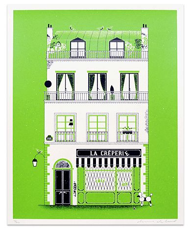
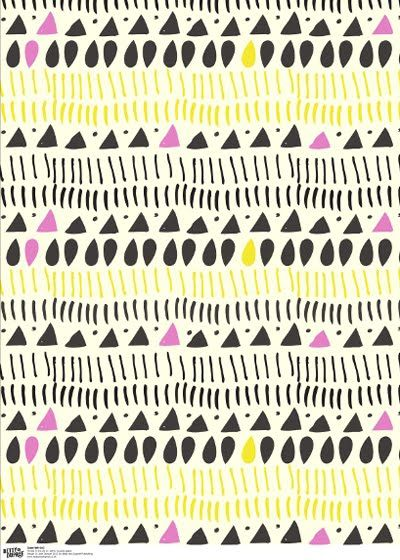
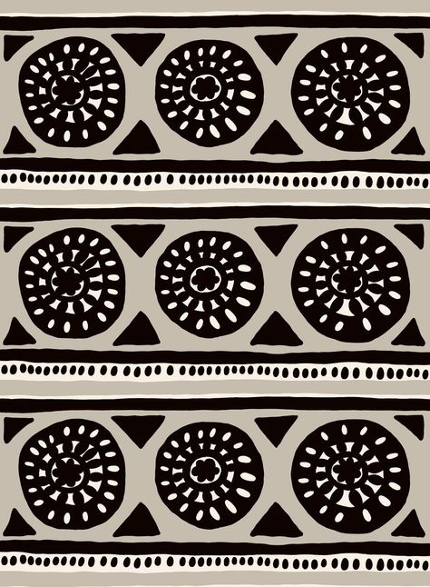
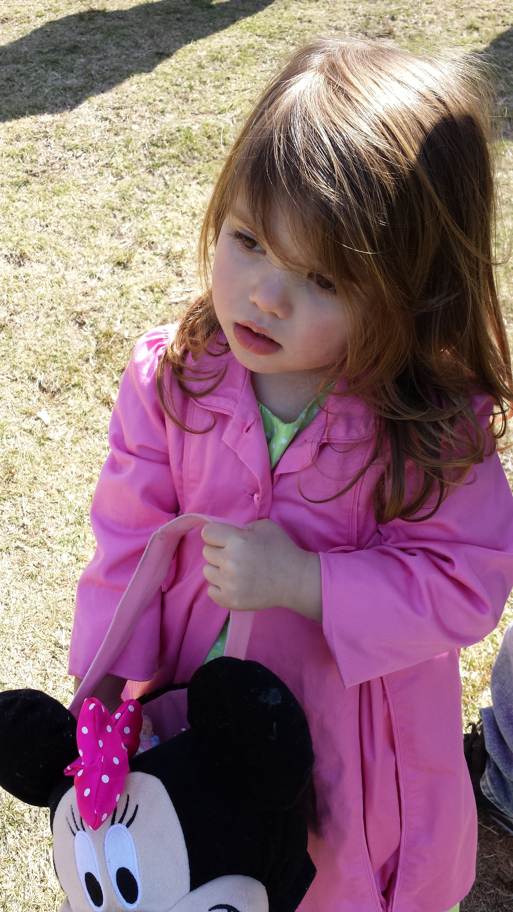

- Introduction |
- Style |
- Layout |
- Components |
- Patterns |
- Resources
2. Style
The following outlines the visual language system used for Project Name.
Typeface
The typeface being used for this project is Montserrat. The reason this font was selected is because it is an open source font for web that most closely resembles the print material typeface which is Gotham.
The main font variations that are being used are Montserrat Semibold and Light. The font variations are shown. These fonts can be found on as part of the google fonts collection.
This is the main body copy size. Shabby chic tote bag taxidermy helvetica. Meh ennui pickled chartreuse skateboard. Kogi forage cold-pressed, crucifix venmo banh mi.
body copy
Body copy. Montserrat Light. 16px size. Line Height 24px. #4C4E51.
This is a heading size 1 for this project.
heading 1
Headings 1. Montserrat Light. 32px size. Line Height 42px. #4C4E51.
This is a heading size 2 for this project.
heading 2
Headings 2. Montserrat Light. 24px size. Line Height 32px. #4C4E51.
This is small copy for links.
small text links
Small copy. Montserrat Light. 14px size. Line Height 18px. #4C4E51.
This is the main body copy size. Shabby chic tote bag taxidermy helvetica. Meh ennui pickled chartreuse skateboard. Kogi forage cold-pressed, crucifix venmo banh mi.
body copy dark background
Body copy. Montserrat Light. 16px size. Line Height 24px. #4C4E51.
This is a heading size 1 for this project.
heading 1 dark background
Headings 1. Montserrat Light. 32px size. Line Height 42px. #4C4E51.
This is a heading size 2 for this project.
heading 2 dark background
Headings 2. Montserrat Light. 24px size. Line Height 32px. #4C4E51.
This is small copy for links.
small text links dark background
Small copy. Montserrat Light. 14px size. Line Height 18px. #4C4E51.
Color Palette
Below is the primary color palette that is being utilized for this project. These colors were chosen because they are the colors laid out in Companies brand guidelines.
primary color
#1A527E
secondary color
#EE242F
tertiary color
#F9F5CB
primary background color
#0FFFFFF
secondary background color
#010201
call to action color
#82CECB
Logo Treatment
This section would document how logo is to be treated if there were brand guidelines surrounding this. It would include information such as clear space and min/max size requirements for logo. As well, it would be good to note here that the preferred format for logos is svg, and that a regular and inverse logo are useful.
company logo
Icongraphy
This would be a description of the icon style. It could include but is not limited to information on a grid system if the icon was built on a grid. It could also nclude information pertaining to icon colors, shadows, lighting, the types of shapes (rounded or corners), the thickness of lines. Any information that is useful in helping people build consistent icons for a project. As well, good to note that svg is preferred format of icons.
calendar

delete
edit
search
Illustration
If there is illustration used in the project this section would document the illustration style. The type of style, if it is fun or serious. How you achieve it maybe. Also format that is preferred for these types of documents.

illustration 1
Patterns
If there are patterns that are being used for this project they would be available here. Same as other sections, this could give a description of how they are created or the thought behind them. Perhaps they are organic, or geometric. Maybe patterns are only to be created with certain color combinations. But those details would live here. As well would document best file format for these types of docs as well.

pattern 1

pattern 1
Imagery
If there is imagery in part with project this section would talk about the type of imagery that is to be used. For example, the photography is meant to enhance the user experience, choose images that express personal relevance, information, and delight. Make sure it is context relevant. When we use imagery they are warm and real and capture people in mid conversation. Or if there are specs to create an effect on a picture those can be documented as well. This section will grow as there are examples to fill it out. Some of our favorite photo galleries are Veer and Flickr or explore or asset library Library.

example image
If internal might be useful to have image number and source here, ex. Veer #12345678
Video
The same goes for this section as well. If video is utilized in the project the different assets would be downloadable from here. As well, it would detail the type of video files to be used and what used for. Also format that is useful for these types of files.
Tone of Voice
Our voice is human. It's familiar, friendly, and straightforward. Our priority is explaining our services and helping our users get their work done so they can get on with their lives. We want to educate people without patronizing or confusing them. One way to think of our voice is to compare what it is to what it isn't. Our voice is:
- Fun but not silly
- Confident but not cocky
- Smart but not stodgy
- Informal but not sloppy
- Helpful but not overbearing
- Expert but not bossy
- Weird but not inappropriate
This could be an area where the different content types are listed and you are able to link to examples:
- Blog
- Success Message
- Website